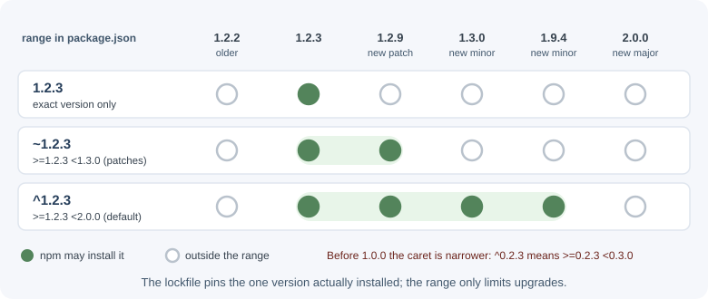
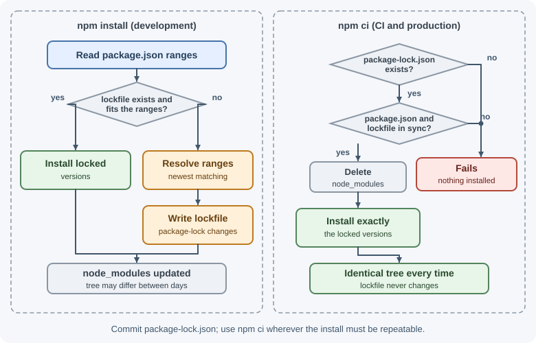

npm and Package Management¶
npm (originally "Node Package Manager") is the default tool for installing,
updating, and publishing JavaScript packages, and the name of the public
registry that hosts them. Every Node.js project describes itself and its
dependencies in a package.json file, and npm uses that file to build the
node_modules folder.
Why it matters¶
A typical backend depends on dozens of direct packages and hundreds of indirect ones. How you declare versions, lock them, install them in CI, and check them for vulnerabilities decides whether builds are reproducible and whether a compromised package can reach production. Package management is a daily skill, not a one-time setup.
Real-world usage¶
- left-pad (2016): an author unpublished 273 packages from npm after a
name dispute. One of them, the tiny
left-pad, sat deep in the dependency trees of thousands of projects, including Babel. npm saw hundreds of install failures per minute and, in an unprecedented step, re-published the exact version (0.0.3) that dependents pinned, ending a 2.5-hour disruption (npm blog: kik, left-pad, and npm). - event-stream (2018): a new maintainer of the popular
event-streampackage added a dependency,flatmap-stream, that contained malicious code targeting one company's development environment. npm removed the malicious versions and took ownership of the package (npm blog: Details about the event-stream incident). - Shai-Hulud (2025): a self-replicating worm spread through compromised maintainer accounts by injecting malicious post-install scripts into popular packages, and stole secrets. GitHub responded by requiring 2FA for local publishing, limiting granular tokens to seven days, and pushing trusted publishing from CI (GitHub blog: Our plan for a more secure npm supply chain).
- pnpm now refuses to run dependencies' build scripts unless they are
listed in
allowBuilds, because most compromised packages have used install scripts to run code (pnpm docs: Supply chain security).
Popular tools and providers: npm, pnpm, and Yarn as clients; the npm registry, GitHub Packages, and private registries such as Verdaccio or Artifactory; Dependabot and Renovate for update pull requests.
How it works¶
package.json¶
{
"name": "orders-api",
"version": "1.4.0",
"private": true,
"type": "module",
"main": "./src/server.js",
"exports": "./src/server.js",
"scripts": {
"dev": "node --watch --env-file=.env src/server.js",
"start": "node src/server.js",
"test": "node --test",
"lint": "eslint ."
},
"dependencies": {
"express": "^5.1.0",
"zod": "^3.23.8"
},
"devDependencies": {
"eslint": "^9.10.0",
"supertest": "^7.0.0"
},
"engines": {
"node": ">=22"
}
}
| Field | Purpose |
|---|---|
name |
Package name. Lowercase, URL-safe; may be scoped like @acme/orders. |
version |
The package's own semantic version. |
private |
true prevents accidental npm publish. Use it for applications. |
type |
"module" makes .js files ES modules; "commonjs" (default) makes them CommonJS. |
main |
Entry point when someone imports the package (older field). |
exports |
Modern, stricter map of the package's public entry points. |
scripts |
Named commands run with npm run <name>. |
dependencies |
Packages needed at runtime in production. |
devDependencies |
Packages needed only for development, tests, and builds. |
peerDependencies |
Packages the consumer must install, typically for plugins (for example, a React component library declaring react). |
optionalDependencies |
Packages that may fail to install without failing the whole install. |
engines |
Supported Node.js (and npm) versions. |
Create one with npm init (interactive) or npm init -y (defaults).
Semantic versioning¶
Packages use semantic versioning (semver): MAJOR.MINOR.PATCH.
- MAJOR changes may break existing code.
- MINOR adds features in a backward-compatible way.
- PATCH fixes bugs in a backward-compatible way.
- Pre-releases look like
2.0.0-beta.1.
Version ranges in package.json say which versions are acceptable:
| Range | Means | Matches for 1.2.3 |
|---|---|---|
1.2.3 |
Exactly this version | 1.2.3 only |
^1.2.3 |
Compatible: same major | >=1.2.3 <2.0.0 |
~1.2.3 |
Approximately: same minor | >=1.2.3 <1.3.0 |
>=1.2.3 <1.5.0 |
Explicit range | As written |
1.x / 1.* |
Any 1.x version | >=1.0.0 <2.0.0 |
* / latest |
Anything | Avoid |
npm install express saves ^ ranges by default.

The 0.x special case
Before 1.0.0, any change may break things, so caret ranges are narrower:
^0.2.3 means >=0.2.3 <0.3.0, and ^0.0.3 means exactly 0.0.3.
package-lock.json¶
Ranges allow many versions, so two installs on different days could produce
different trees. package-lock.json records the exact version, download
URL, and integrity hash of every installed package, including indirect
(transitive) dependencies.
- Commit it for applications so every developer, CI run, and server gets the identical tree.
- The integrity hashes make npm reject tampered downloads.
- Review lockfile changes in pull requests; unexpected new packages are a warning sign.
npm install versus npm ci¶
| Command | Behavior | Use it |
|---|---|---|
npm install |
Installs from package.json, using the lockfile where it fits; may update the lockfile. |
Local development, adding packages. |
npm install <pkg> |
Adds a dependency and updates both files. | Adding a runtime dependency. |
npm install -D <pkg> |
Adds a devDependency. | Adding a tool. |
npm ci |
Requires a lockfile; deletes node_modules and installs exactly what the lockfile says; fails if package.json and the lockfile disagree; never writes package.json or the lockfile. |
CI pipelines and production builds. |
npm ci --omit=dev |
Same, without devDependencies. | Production images. |

Updating¶
npm outdated # shows Current, Wanted (max in range), Latest
npm update # updates within your ranges and the lockfile
npm install express@6 # move to a new major deliberately
npm update never crosses a range boundary, so major upgrades are always a
deliberate choice. Read changelogs before major upgrades.
Scripts and lifecycle hooks¶
npm run dev # runs scripts.dev
npm start # shortcut for npm run start
npm test # shortcut for npm run test
npm run lint -- --fix # arguments after -- are passed to the script
npm adds node_modules/.bin to PATH while a script runs, so scripts can
call locally installed tools by name (eslint, not
./node_modules/.bin/eslint).
If a script named prebuild or postbuild exists, npm runs it before or
after build. Packages can also define install lifecycle scripts such as
preinstall, install, postinstall, and prepare, which run
automatically when the package is installed—this is important for security
(see below).
npx¶
npx <command> runs a package's binary from the local node_modules/.bin
if it is installed. Otherwise npx asks for confirmation, then downloads the
package into the npm cache and runs it (--yes skips the prompt).
npx prisma migrate dev
npx create-vite@latest my-app
Global versus local installs¶
- Local (default): installed into the project's
node_modulesand recorded inpackage.json. Use this for everything the project needs, including tools. - Global (
npm install -g): installed once for the machine. Use it only for standalone CLIs you run outside projects. Global tools are not recorded in any project, so teammates and CI do not get them.
Security: the supply chain¶
Every dependency is code you run with full access to your machine and servers. Common risks:
- Known vulnerabilities in a package version.
- Typosquatting: malicious packages with names like
expresorlodahs. - Malicious install scripts:
postinstallruns arbitrary code duringnpm install. - Compromised maintainer accounts publishing a malicious new version of a popular package.
- Dependency confusion: a public package shadowing an internal package name.
Defenses:
npm audit # report known vulnerabilities
npm audit fix # apply compatible fixes
npm ci --ignore-scripts # install without running lifecycle scripts
npm ls express # see why a package is in the tree
- Commit and review the lockfile; use
npm ciin CI. - Check a package's maintainers, download history, and repository before adding it. Fewer dependencies mean a smaller attack surface.
- Consider disabling install scripts (
ignore-scripts=truein.npmrc) and allowing only the packages that genuinely need them. - Use scoped names (
@your-org/...) and a private registry for internal packages. - Enable automated update tooling (such as Dependabot or Renovate) so fixes arrive as reviewable pull requests.
Workspaces and monorepos¶
npm workspaces manage several packages in one repository with a single
install and shared node_modules:
{
"name": "acme",
"private": true,
"workspaces": ["packages/*", "services/*"]
}
npm install # installs all workspaces
npm run test --workspaces # run test in every workspace
npm install zod -w services/orders # add a dependency to one workspace
Workspaces can depend on each other by name, so a shared @acme/validation
package can be used by several services without publishing it.
pnpm and Yarn¶
| Tool | Key idea |
|---|---|
| npm | Default, ships with Node.js. |
| pnpm | Stores each package version once in a global content-addressable store and links it into projects; saves disk space, installs fast, and has a strict layout that prevents using undeclared dependencies. Does not run dependencies' build scripts unless they are listed in allowBuilds; by default the install fails when an unapproved one is found. |
| Yarn | Alternative client with workspaces and Plug'n'Play mode (no node_modules). |
All use package.json; each has its own lockfile (pnpm-lock.yaml,
yarn.lock). Use one tool per project and commit its lockfile.
Publishing basics¶
npm login
npm version patch # bump version, create a git tag
npm publish --access public
- Use the
filesfield (or.npmignore) so you publish only built output, not tests or secrets. - Scoped packages are published with private visibility by default;
--access publicmakes them public. - Prefer publishing from CI with provenance or trusted publishing, so users can verify where a package was built.
.npmrc¶
.npmrc configures npm per project (./.npmrc) or per user
(~/.npmrc):
save-exact=true
engine-strict=true
@acme:registry=https://npm.acme.example/
//npm.acme.example/:_authToken=${NPM_TOKEN}
Reference tokens through environment variables as shown; never commit a real
token. npm replaces ${VARIABLE_NAME} with the variable's value, and leaves
the text unchanged if the variable is not defined.
When to use and when not to use¶
- Use
npm installlocally to add, remove, or update packages. - Use
npm ciin CI and production builds, where the install must match the lockfile exactly and fail loudly if it cannot. - Use exact versions (
save-exact=true) for applications that want every change to arrive through a reviewed pull request. Ranges plus a lockfile are also fine; the lockfile already pins what is installed. - Use local installs (
devDependencies+npx) for project tools; reserve-gfor personal CLIs. - Use workspaces when several packages or services in one repository share code.
- Do not add a dependency for a few lines of code you can write and test yourself; each package is code you trust with your servers.
| Client | Strengths | Trade-offs |
|---|---|---|
| npm | Ships with Node.js; no extra setup; workspaces | Flat node_modules lets code import undeclared packages |
| pnpm | Fast, disk-efficient, strict layout, blocks unapproved build scripts | Some old tools assume a flat node_modules |
| Yarn | Plug'n'Play (no node_modules), mature monorepo features |
PnP needs editor and tool support |
Practical examples¶
Adding and removing packages¶
npm install express # runtime dependency
npm install -D vitest # dev dependency
npm uninstall left-pad # remove and update package.json
npm install express@5.1.0 -E # exact version (-E = --save-exact)
A production Docker install¶
FROM node:24-alpine
WORKDIR /app
COPY package.json package-lock.json ./
RUN npm ci --omit=dev # exact, reproducible, no dev tools
COPY src ./src
USER node
CMD ["node", "src/server.js"]
Best practices¶
- Commit
package-lock.jsonfor applications; usenpm ciin CI and production builds. - Put build and test tools in
devDependenciesand install production images with--omit=dev. - Mark applications
"private": true. - Keep dependencies few and up to date; remove unused ones.
- Run
npm auditin CI and act on high-severity findings. - Upgrade majors deliberately, one at a time, with tests.
- Use the
enginesfield and.nvmrcto declare the Node.js version.
In production¶
- CI fails with a lockfile error.
- Symptom: the pipeline stops at the install step.
- Detect: the log shows
npm error code EUSAGEand "npm cican only install packages when your package.json and package-lock.json or npm-shrinkwrap.json are in sync", followed by a line such asMissing: is-number@7.0.0 from lock file. - Cause: someone edited
package.jsonby hand, or committed it without the updated lockfile. - Fix: run
npm installlocally and commit both files together. Never switch CI tonpm installto make the error go away. - "Works on my machine", crashes in the container.
- Symptom: the production image fails at startup with
Cannot find package 'zod'(ESM) orCannot find module 'zod'(CommonJS). - Detect: the missing package is listed under
devDependencies, and the image was built withnpm ci --omit=dev. - Cause: a runtime import of a dev-only package.
- Fix: move it to
dependencies, and run a smoke test against the built image in CI. - An update breaks code that never imported the package.
- Symptom: after
npm update, a module that was always "there" is missing. - Detect:
npm ls <package>shows it was only present as a dependency of another package. - Cause: the code relied on a phantom dependency that npm's flat
node_moduleshappened to expose. - Fix: declare every package you import in your own
package.json. pnpm's strict layout catches this early. - A compromised dependency.
- Symptom: a security advisory, unexpected outbound network traffic from build machines, or new packages in a lockfile diff nobody requested.
- Detect:
npm auditin CI, dependency update tools, and review ofpackage-lock.jsonchanges in pull requests. - Cause: a malicious version published through a stolen maintainer
account, often running code in
postinstall. - Fix: pin to the last safe version, disable install scripts, rotate any secrets the build could reach, and prefer packages published with provenance.
Important terminology¶
- Package: A folder or archive described by a
package.json, usually published to a registry. - Registry: A server that stores packages, such as the public npm registry.
- Dependency: A package your code needs.
- Transitive dependency: A dependency of one of your dependencies.
- Semantic versioning: The MAJOR.MINOR.PATCH versioning convention.
- Lockfile: A file that pins the exact resolved dependency tree.
- Lifecycle script: A script npm runs automatically, such as
postinstall. - Workspace: A package inside a monorepo managed by one root install.
- Supply-chain attack: An attack delivered through a dependency rather than your own code.
Common mistakes and misconceptions¶
- Not committing the lockfile, so different machines install different versions.
- Using
npm installin CI, which may change the tree instead of failing when files disagree. - Putting tools in
dependencies, which bloats production images. - "
^means latest." It means the latest version within the same major. - Deleting the lockfile to "fix" install errors, which silently upgrades everything.
- Trusting a package because it is popular. Popular packages are attractive targets.
- Installing project tools globally, so teammates and CI lack them.
Revision questions¶
- What is the difference between
dependencies,devDependencies, andpeerDependencies? - Which versions does
^1.4.2allow? And~1.4.2? And^0.4.2? - Why should
package-lock.jsonbe committed, and what does it contain? - When should you use
npm ciinstead ofnpm install? - Name three supply-chain risks and one defense for each.
- What problem do workspaces solve?